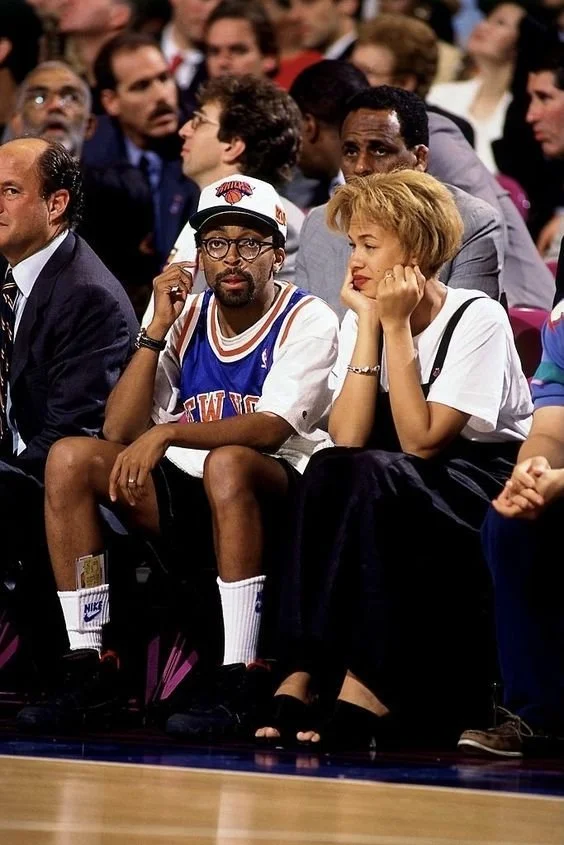
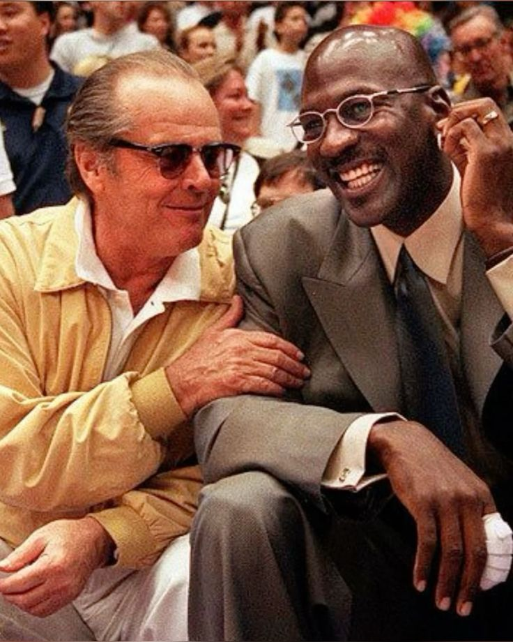
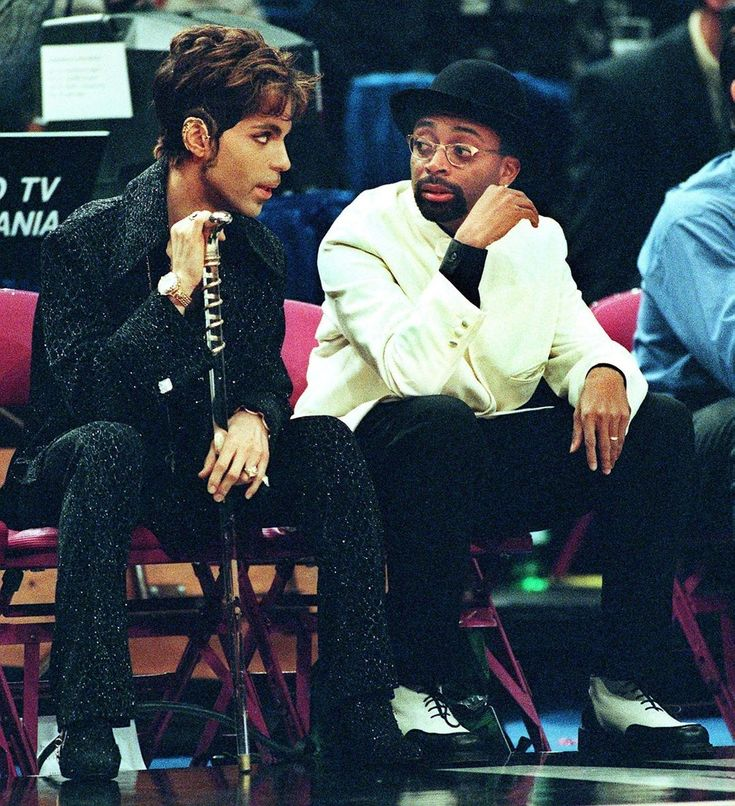
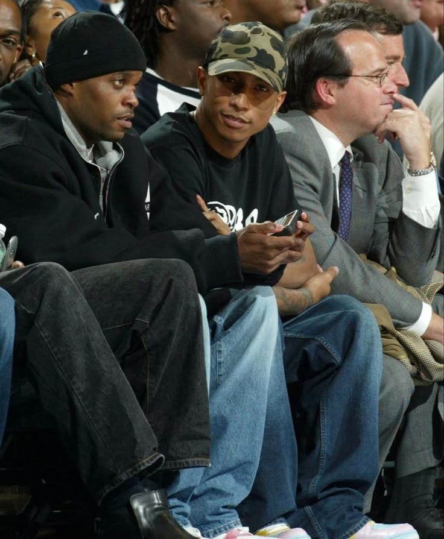
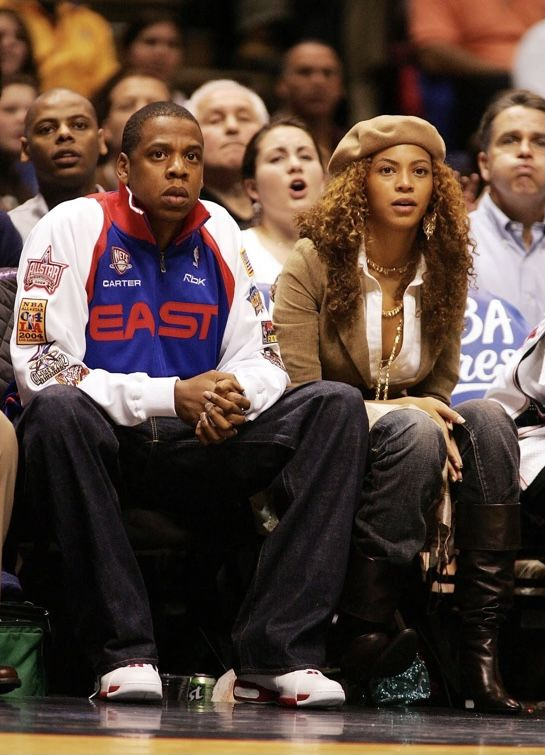

Tuesday, May 19, 2026
Basketball turned fashion into performance long before luxury understood content strategy. Sneakers became status objects, team jackets became archive pieces, and athletes became editors of masculinity, silhouette, jewelry, color, and posture in real time. Courtside culture expanded that language outward; actors, rappers, designers, athletes, models, and executives all participating in the same visual conversation. Courtside was never just about basketball; it became fashion's most visible front row.

Spike Lee, 1994 NBA Finals Game 4. Photo via Nathaniel S. Butler/NBAE via Getty Images.
Before social media, courtside was where statements were made. A place to debut the next era of fashion before the rest of the world had language for it.
In those years, being courtside meant visibility without immediacy. There was no Instagram, no tunnel-fit accounts, no instant repost cycle. A courtside appearance guaranteed attention from photographers, magazines, sports broadcasts, and the people watching closely for cues on what mattered next.
Fashion moved slower then, which made the statement heavier. Courtside became one of the earliest spaces where sports, celebrity, and style merged into a public performance of cultural influence.
Before athletes arrived in tunnels dressed like runway castings, there was Michael Jordan. Jordan understood that dominance extended beyond the floor. The oversized tailoring, silk ties, watches, and loafers were not accidental. They reflected an era where power dressing still meant looking untouchable.
What made Jordan culturally permanent was not simply winning. It was teaching athletes that image could travel further than highlights. The sneaker became mythology. The fit became authority. Courtside culture begins here; the athlete as a luxury discussion.

Jack Nicholson and Michael Jordan at Lakers game, 1999. Photo via Lori Shepler / Los Angeles Times.
Streetwear icons like Pharrell shifted the language entirely. At courtside, his outfits never looked forced; they were highly informed. That distinction changed everything. BBC hoodies, vintage jewelry, and Human Made made courtside feel less corporate and more archival, like someone who collected culture instead of simply consuming it.
The modern fashion audience now speaks fluently in references because figures like Pharrell taught them how.

Pharrell Williams at Knicks Game, 2003. Photo via Getty Images.
Spike Lee made fandom cinematic. No one wore allegiance more visibly. The orange glasses, Knicks jackets, varsity leather, and constant courtside presence transformed him into part of the game's visual identity. His relationship with basketball blurred entertainment, fashion, and storytelling into one image.
Courtside culture depends on recognizable characters. Spike understood repetition creates iconography. The seat becomes more powerful when someone occupies it consistently enough to redefine it.

Prince and Spike Lee at NBA All-Star Game at Madison Square Garden, 1998. Photo via TIM CLARY/AFP via Getty Images.
The most important shift may be this: courtside is now participatory media. Fans track watches, sneakers, handbags, reactions, who sits next to whom, who receives camera cuts, and who brands themselves successfully through presence alone. The seat itself became social currency.
What once represented proximity to basketball now represents proximity to culture at large. Fashion, music, sports, celebrity, and wealth collapse into the same frame for a few seconds at a time.

Jay-Z and Beyonce at New Jersey Nets game, 2006. Photo by Al Bello/Getty Images.
Courtside style matters because basketball remains one of the few places where culture still moves in real time.
The people seated nearest to the floor often reveal where fashion is heading before the industry names it officially. Silhouettes appear there first, sneaker collaborations gain legitimacy there first. Jewelry trends, archival references, niche brands, and new forms of masculinity all pass through the arena before entering retail campaigns months later.
The game continued, but the audience changed. Now everyone studies the sidelines too.